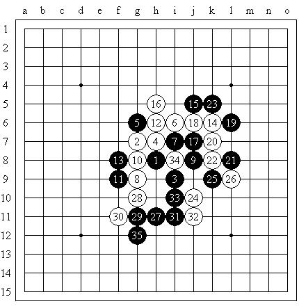

全团赛自战解说(炫飞2队黄金贤)
#1 全团赛自战解说(炫飞2队黄金贤) 作者：雨一直下 发表时间：2008-6-23 6:51:56
就谈谈我全团赛的棋局吧。
第一局 混混（黑）VS袁金丰（白），黑胜

第一局，我养足精神应付对手。还是和上次全国赛一样，我怀着不输的念头开了个斜月，意外的是他竟然不换。我顿时就傻了，怎么办？不想走
2
打，怕他走大定式和棋。我没听过这个人的名字，不知道他会不会很强，想了一阵，
g6
这个
5
在网上我走过不少，我们拼棋力吧。他的
8
一落子，我就很生气了。这样都还要还原
2
打的变化，好哇，你必定是想和了，于是我很自信的猜测，这人的棋力一定不高。
真是气煞我也！这么没骨气，一定要逼我走大定式！哼！大定式我还可以变呢，斜月谱我可是看过很多遍的。双方都冷静的下到
#2 Re:全团赛自战解说(炫飞2队黄金贤) 作者：逆刃 发表时间：2008-6-23 10:32:10
只能说楼主实在是辛苦了。。
#3 Re:全团赛自战解说(炫飞2队黄金贤) 作者：牛牛 发表时间：2008-6-23 11:14:31
黄金啊黄金啊,可怜的意大利啊 德罗西欧冠就丢过点球还让他来踢? 真怀念皮尔洛!!!!!!!
德罗西欧冠就丢过点球还让他来踢? 真怀念皮尔洛!!!!!!!
见到小贤了,以前以为是年龄很大的人了,原来是很帅的年轻小伙子啊
［ 掌棋宣传员 于 2010-8-4 23:21:02 时花20金币送鲜花一朵］
#4 Re:Re:全团赛自战解说(炫飞2队黄金贤) 作者：17号蓝星仔 发表时间：2008-6-23 12:51:52
引用：
原文由 牛牛 发表于 2008-6-23 11:14:31 :黄金啊黄金啊,可怜的意大利啊
见到小贤了,以前以为是年龄很大的人了,原来是很帅的年轻小伙子啊
牛牛的意大利没了 不过也都差不多了 双方实力都差不多 主要是西班牙运气好点 黄金可是个小帅哥哦 和你一样是个超级五子棋热爱者 记得有一次我去棋社那里参加活动 见了黄金 他从一开始进去棋社就一直的找人下棋 下一局还想两局一起下 最后还一边联棋 一边和无尽对局 到了时间还不想走 还想把棋下完 终于还是给我掀了桌子
#5 Re:全团赛自战解说(炫飞2队黄金贤) 作者：潇洒 发表时间：2008-6-23 13:14:15
第四局 怎么两个人都是白啊
［ 有志青年 于 2008-6-23 15:15:56 时奖励此帖[金币加 20 威望加1］已修正
#6 Re:全团赛自战解说(炫飞2队黄金贤) 作者：lfzxdh 发表时间：2008-6-23 16:12:14
好贴~~~顶顶顶~~~哈哈
#7 Re:全团赛自战解说(炫飞2队黄金贤) 作者：爱的礼物 发表时间：2008-6-24 12:30:41
看见女的就来气?那赛前为什么还拿手机拍了郑蔚楠
#8 Re:全团赛自战解说(炫飞2队黄金贤) 作者：王亦之 发表时间：2010-5-25 18:21:46
传说中的黄金贤，不错，这次北京高校精英赛见到真人了［ 掌棋宣传员 于 2010-8-4 23:21:56 时花20金币送鲜花一朵］
#9 Re:全团赛自战解说(炫飞2队黄金贤) 作者：水月 发表时间：2010-5-26 0:57:30
挖坟是不道德的。。。#10 Re:全团赛自战解说(炫飞2队黄金贤) 作者：萱萱 发表时间：2010-6-6 13:18:59
#11 Re:全团赛自战解说(炫飞2队黄金贤) 作者：圊籽 发表时间：2010-8-1 1:33:33
中午“查下先”，第一眼见到的就是这篇。第一感觉：很帅很可爱，两者应该没矛盾
青子到此一（梦）游
［ 掌棋宣传员 于 2010-8-4 23:22:45 时花20金币送鲜花一朵］
#12 Re:全团赛自战解说(炫飞2队黄金贤) 作者：何柔 发表时间：2010-8-4 23:00:38
什么时候教我斜月